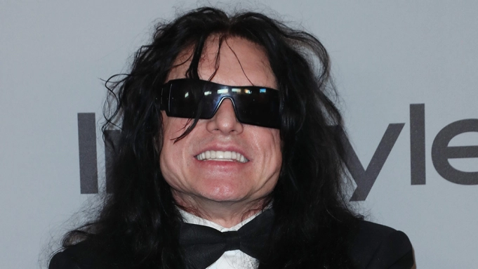

Oh hai, everybody! Here you will find just a bit about the man, myth, and legend Tommy Wiseau. Tommy is an American actor and filmmaker. He is best known for writing, producing, directing, and starring in the 2003 film The Room, which has been often called one of the worst films ever made. Despite this, the film and Tommy,himself, have gained cult status among many who have watched the film.
Tommy Wiseau is pretty secretive about his early life and at various times claimed to have lived in France "a long time ago" and that he grew up in New Orleans,Louisiana. There are conflicting accounts of his actual age. Tommy has gone on record saying that he was born in 1968, but others have claimed to have found copies of Wiseau's U.S. immigration papers saying that he was born in an Eastern Bloc country in the mid- to late 1950s. Wiseau confirmed publicly for the first time in November 2017 that he is originally from Europe. Saying:"Long story short, I grew up in Europe a long time ago, but I'm American and very proud of it."
In The Disaster Artist, written by Greg Sestero, a close friend of Tommy Wiseau's, he asserts that Wiseau revealed to him—through "fantastical, sad, self-contradictory stories"—that as a young adult he moved to Strasbourg, where he adopted the name "Pierre" and worked as a restaurant dishwasher. According to Sestero, Wiseau described being wrongfully arrested following a drug raid at a hostel and being traumatised by his mistreatment by the French police, which led him to immigrate to the U.S. to purportedly live with an aunt and uncle in Chalmette.These claims have not been verified. Sestero (the only source Wiseau is alleged to have told this to) asserts that after Wiseau had lived in Louisiana for some amount of time, he subsequently moved to San Francisco, California, where he worked as a street vendor selling toys to tourists near Fisherman's Wharf. Wiseau supposedly gained the nickname "The Birdman" for his bird toys, which were only popular in Europe at the time; this led him to legally change his name when he became a U.S. citizen to Thomas Pierre Wiseau, taking the French word for "bird" (oiseau) and replacing the O with the W of his birth name. Around this time, Wiseau also claims to have obtained a degree in psychology from Laney Community College in Oakland,asserting that he had graduated on the honor roll.
According to Sestero, Wiseau claims to have worked a variety of jobs in the San Francisco Bay Area, including restaurant busboy and hospital worker, and ran a business called Street Fashions USA that sold irregular blue jeans at discounted prices. He then claims to have eventually purchased and rented out large retail spaces in and around San Francisco and Los Angeles, making him independently wealthy. Tommy used his own money to finance his dream of becoming an actor and wrote,directed,and produced his movie The Room.
Wiseau's film The Room was released in 2003. Its budget was $6 million, the financing of which has remained a source of intrigue. The film was based on an unpublished 540-page novel written by Wiseau himself. The movie was immediately lambasted by critics, but ultimately became a "cult classic" with late-night showings at theaters around the world. Audience members typically arrive dressed up to look like their favorite characters, interact with the dialogue on screen, and throw plastic cutlery and footballs around the theater in reference to on-screen events. This attention grew into what was dubbed The Room's 2010–2011 "Love is Blind" International Tour, with the movie being screened in the United Kingdom, Germany, Denmark, Australia and India, among other locations. Wiseau appeared at many of these events, posing for photographs with fans and often addressing the audience before screenings. In the 2017 film adaptation of Greg Sestero's autobiography The Disaster Artist, James Franco portrays Wiseau, for which he won the Golden Globe Award for Best Actor – Motion Picture Musical or Comedy. Wiseau approved of the choice, as well as that of Dave Franco as Sestero. Wiseau makes a cameo appearance in a post-credits scene as Henry.